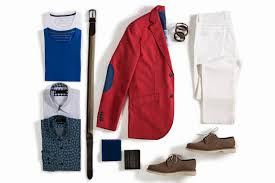
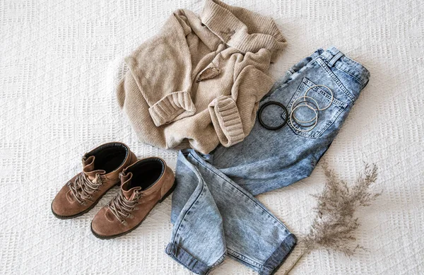
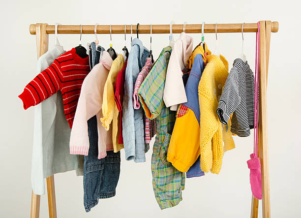

Clothing sense is far more than just picking out clothes; it's a nuanced form of self-expression that communicates who you are before you even say a word. It involves understanding fit, color, fabric, and occasion, and how these elements combine to create a cohesive and impactful look. Beyond simply covering the body, a well-developed clothing sense allows individuals to enhance their best features, project confidence, and adapt their appearance to various social and professional settings. It's about curating a wardrobe that reflects your personal style and makes you feel comfortable and empowered, ultimately influencing how others perceive you and how you perceive yourself..
men's fashion |
Men's fashion in 2024-2025 is a dynamic blend of comfort and refined style. Relaxed tailoring with soft shoulders and wide-leg trousers dominates, often paired with casual elements like plain tees. Utility-inspired fashion with clean lines and elevated fabrics remains strong, alongside a surge in statement shirts featuring bold prints, patterns, and even sheer materials. Soft neutrals and pastels are trending, offering a fresh alternative to traditional darker tones. Denim gets creative with wide-leg and baggy styles, often customized with unique details. Footwear leans into retro silhouettes with modern twists, and accessories like crossbody bags and bold socks are key for personal expression. |
female's fashion |
Female fashion is a dynamic and multifaceted realm, constantly evolving while embracing timeless elegance. It encompasses a vast spectrum of styles, from sophisticated formal wear to relaxed casual ensembles, reflecting individual personalities and societal trends. Accessories like handbags, jewelry, and shoes play a crucial role in completing an outfit, adding flair and personal touch. The industry continually innovates with new fabrics, silhouettes, and patterns, offering women endless possibilities to express themselves through their clothing choices, whether prioritizing comfort, making a bold statement, or adhering to classic aesthetic |
kids's fashion |
Kids' fashion, while often mirroring adult trends, prioritizes comfort, durability, and playful expression. Bright colors, whimsical prints, and practical designs dominate, allowing children freedom of movement for play and exploration. From tiny, adorable rompers for infants to miniature versions of trendy streetwear for older children, the emphasis is on age-appropriateness and fun. Easy-care fabrics are a must for busy parents, while features like adjustable waistbands and reinforced knees cater to active lifestyles. Ultimately, kids' fashion is about combining practicality with imagination, letting their personalities shine through their clothes. |